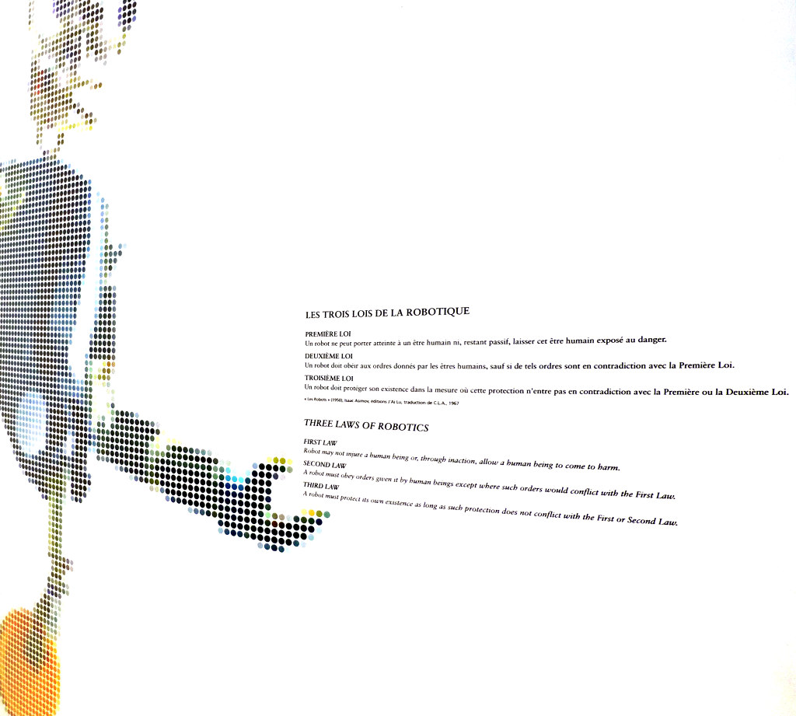

Ethics for Techies
A Moral Guide for Turbulent Times

In these turbulent times of troubled leftist movements and worrying fascist risings of eroding privacy and Orwellian surveillance, it is too easy to lose track of moral principles. For those of use involved in technology it is our duty to understand that we are indeed transforming society, not always for good.
In this article I will try to explain how I try to make moral choices, in the hope that it will be useful for others too.
Right and Wrong
Let us start at the very beginning. What is “right” and what is “wrong”? How can we tell the difference?
What Is Mine Is Mine
Generalizing
The core of the moral problem lies at the center of language, and it is that of generalization.
Objectivity
Laws
The problem of having written laws is that they should apply equally to everyone. However all laws have a scope and many exceptions.
Dealing with Contradictions
Religion
Given that it is hard to get our own ideas about what is right and wrong, it is tempting to give in and let someone else define our moral principles. But such a path is not free of conflict; on the contrary, it is probably even more fraught with contradictions.
In the Bible, Exodus 32, Moses comes down from the mountain with the ten commandments written in stone. One of them is, of course, “You shall not murder”. Then he finds his people worshipping the Golden Calf, gathers a few loyals and murders the whole lot.
About rich people, Jesus says in the Bible:
It is easier for a camel to go through the eye of a needle than for someone who is rich to enter the kingdom of God.
I don’t think there is any ambiguity here. And yet it is easy to spot rich people calling them Christians; they have to contort the meaning of “rich” in their own heads or else be complete hypocrites.
The Fractal Nature of Issues
Conclusion
Acknowledgements
Published on 2019-01-13, last modified on 2019-01-13. Comments, suggestions?
Back to the index.